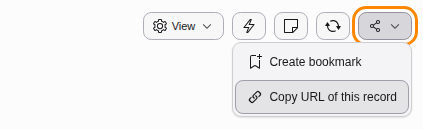
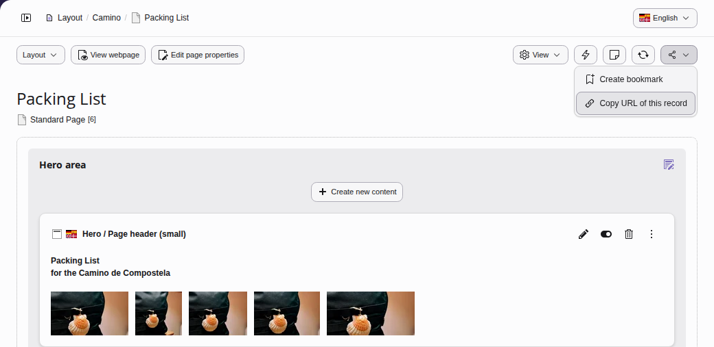
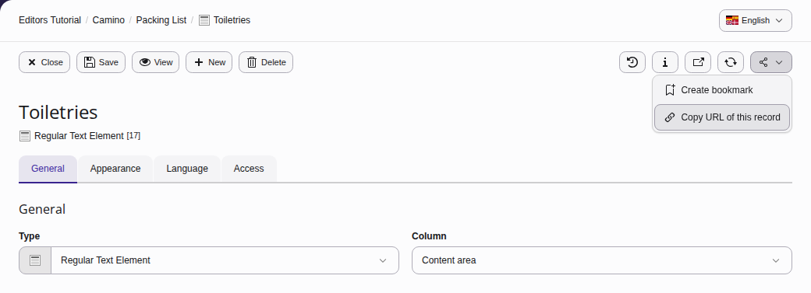
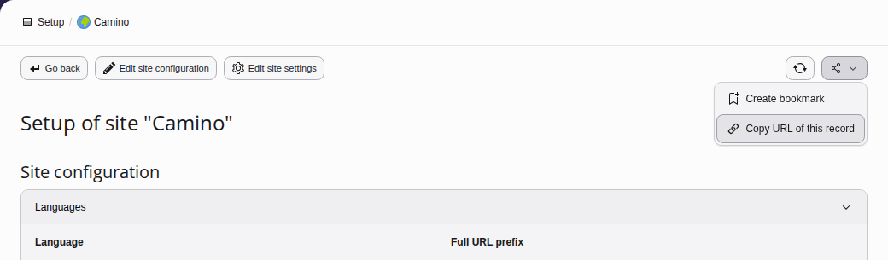
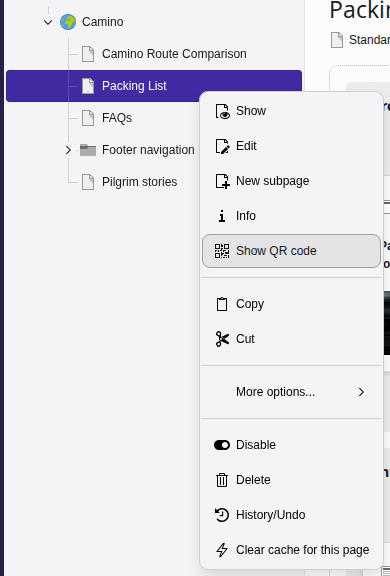
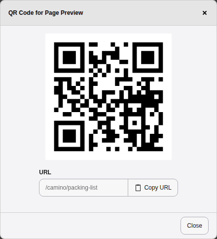

Deep linking
Deep linking allows users to share links to specific pages, content elements and modules from within TYPO3's backend.
For example, a user could be writing content for a new page that is about to be published. Using deep links, they can share a link to the page they are working on or even share a link to the actual content element that contains their work and send it to another member of the team for review.
Sharing links
To share a link, look for the Share icon located at the top right hand side of any page in the backend. Its menu item Copy URL of this record copies the link.

Linking to a page
The example below creates a deep link to the Packing List page:

Linking to a content element
This example creates a deep link to the Toiletries content element on the
Packing List page:

Linking to backend modules
It is possible to create links to places within backend modules. This example creates a link
to the setup of the site Camino in the Sites > Setup module.

URLs and deep links
When creating links to anything in the backend, it is recommended that the Share button is used to generate the link. Copying the URL from the browser is not recommended.
Sharing a preview with a QR code
New in version 14.2 Feature: #108720 - QR code button for frontend preview
A QR code takes you to the page in the frontend, for example to check the page on your phone, or to show it to someone else. There are two ways to open the QR code of a page:
- In the page tree, right-click the page and choose Show QR code. The context menu of a page offers the item wherever a page is listed.
- In the modules Content > Records and Content > Preview, click the Show QR code button in the top bar.


A dialog shows the QR code. Scan it with the camera of your phone or tablet to open the page. Below the code, the field URL shows the address of the page, and Copy URL copies it.
In a workspace, the QR code leads to a preview of the changes in the workspace, which works without logging in to the backend. You can send it to colleagues or clients who have no backend account, so they can review the changes before they are published. The module Content > Publish offers the QR code for each change in its list as well.